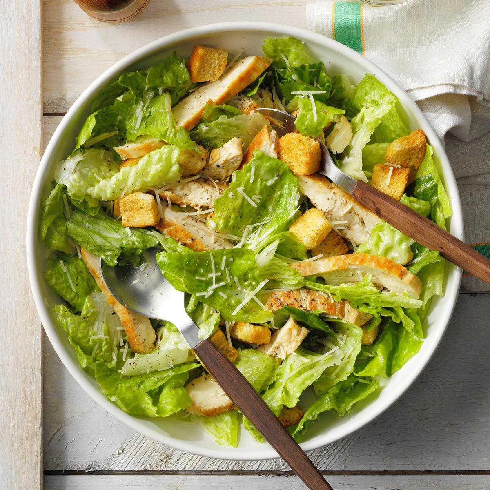
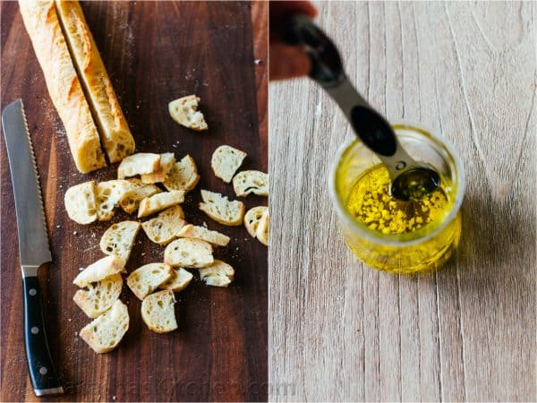

Caesar Salad

Description
Classic Caesar Salad with crisp homemade croutons and a light caesar dressing - for when you want to impress your dinner guests.
Ingredients
- 1 large or 2 small heads of romaine lettuce
- Parmesan cheese, shredded or shaved
- Crisp croutons - homemade can be made several days ahead. The recipe below makes enough for 2 salads.
- Caesar salad dressing
Steps to make croutons
The crunchy homemade garlic croutons really elevate this salad, making it look and taste quite fancy. The cheese crusted onto each little toast will have you snacking on these croutons!
- Cut baguette in half lengthwise and slice into 1/4″ thick pieces and place on baking sheet.
- Combine 3 Tbsp extra virgin olive oil with minced garlic. toss breads with garlic infused oil and 2 Tbsp parmesan.
- Spread Evenly and Bake to desired crispness.

Steps to make caesar salad dressing
The caesar salad dressing comes together so fast and all you need is a bowl and whisk. This Caesar dressing is light, healthy and packs so much fresh flavor without needing much salt at all.
- Whisk together minced garlic, dijon, Worcestershire, lemon juice and red wine vinegar.
- Whisking while adding oil emulsifies the dressing for a smooth and creamy (not oily) consistency.
- Season with 1/2 tsp salt and 1/8 tsp black pepper, or to taste.
How to make caesar salad
In a large mixing bowl, combine all of your ingredients and toss gently to coat the lettuce in caesar dressing. This recipe makes enough croutons for two full salads so you'll have them ready to go for round 2!